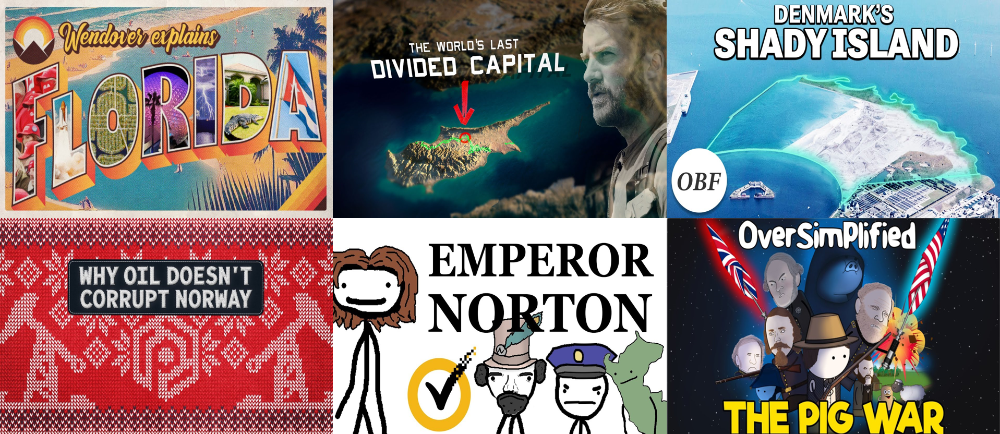

December 1st 2022
As the second largest search engine, Youtube hosts a very large amount of users. And with that, a colossal amount of data.
Luckily the Youtube API makes it possible to access it, which is what this project takes advantage of!
Made in python environment, see the project to see the process in debunking the common Youtube myths and more. Cleaned, extracted, final datasets can be found
here.


User of Power BI? Check out the dashboard of data related jobs international survey with your own app or PowerPoint! Click here to download the Power BI file
or here for the pptx.
Non-users of Power BI can also view the static dashboard here, though you won't be able to actively interact with the data.

See, explore, and understand the data analysis of a whole year worth of online sales data!
With 5 business relevant questions as our guideline and focus, witness the data exploration complete with naration and descriptions where everyone can easily follow along.
Click here for the datasets.
This notebook was made with JupyterLab focusing on exploration of every feature's correlation.
All the steps and process of the analysis is explained in the notebook, as well as explanations!
For dataset used, click here.
In the upcoming project, I'll be making sales analysis with python. Will post it as soon as I can!
Data cleaning is a big part of a data analyst (and even scientist) workflow.
Here, you can see crucial data cleaning steps and its process using SQL Server.
For actual results in screenshots, click here to go along with the query script!
This visualization consists of a dashboard made with Tableau Public using data obtained from the previous data exploration.
For the datasets used, click here.
In it shows summaries of COVID-19 impact on the global scale, as well as an interactive geospatial visualization.
Check the description for more info!
A simple exploration data analysis through global casualty and vaccination numbers of COVID-19 dataset.
For screenshots that go along with the query script, please click here.
In addition, data extraction was performed for Tableau visualizations in the next post!
{kind=link}